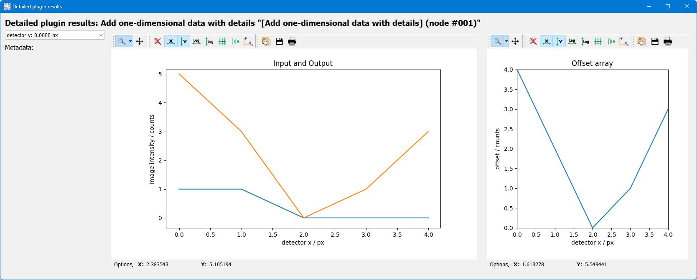

Developers guide to pydidas Plugins#
Pydidas plugins are separated into three categories:
InputPluginsare used to load data from the filesystem.ProcPlugins(short for ProcessingPlugins) are used for processing data. They ingest aDatasetand return aDataset.ProcPluginscan either modify the input data or create new data.OutputPluginscan be used to export additional data or data in specific formats. Usually, data export is handled through the generic infrastructure and need not be handled py plugins.
All pydidas plugins must inherit from one these base classes to be discoverable: Pydidas searches for plugins automatically in the custom plugin paths.
Tip
These custom plugin path can be modified by the user (please see
pydidas QSettings for a guide on how to update the user/plugin_path
manually or use the The User config window to update the paths in the GUI).
Multiple paths need to be separated by a double semicolon “;;”.
Plugin structure#
Plugins include a number of class attributes for permanent configuration (which will be
discussed in detail later) and uses the Parameter class to handle dynamic
configurations.
The two main methods are the pre_execute which is called once at the start of
processing and which can handle computationally expensive tasks which need to be
performed once. The execute method is called repeatedly with the processing data
and ingests one input Dataset and returns one Dataset. The figure below shows a
sketch.
{kind=link}
The simplified Plugin processing diagram. The execute data processing method
can be called as often as necessary while the pre_execute method will be called
exactly once.#
Plugin class attributes#
The following class attributes are used by pydidas to define the generic behaviour of the plugin.
class attribute |
type |
description |
|---|---|---|
|
int |
A key to discriminate between the different types of plugins (input,
processing, output). Please use one of
|
|
int |
Processing plugins are further differentiated into plugins for generic data,
image data or for integrated data. This differentiation is just for plugin
organisation to simplify finding plugins for users. Leave this field empty
for |
|
str |
The plugin name key in human-readable form for referencing the plugin. Usually, this should be similar to the class name but with inserted spaces and correct capitalization. |
|
A ParameterCollection with the class parameters which are required to use the
plugin. The default is an empty |
|
|
int |
The dimensionality of the input data. Use -1 for arbitrary dimensionality. The default is -1. |
|
int |
The dimensionality of the output data. Use -1 for arbitrary dimensionality. The default is -1. |
|
str |
The data label for the output |
|
str |
The data unit of the output |
|
bool |
Keyword that the Plugin creates a new |
|
list[str, …] |
A list with the keys of “advanced parameters”. These Parameters are hidden in the plugin’s Parameter configuration widget be default and can be accessed through the associated button for “advances parameters” not to overwhelm users with too many options. The default is an empty list []. |
Generic plugin attributes and methods#
This section describes the generic attributes and plugin methods and classmethods which all plugins inherit and use.
Generic attributes#
Plugins have a number of attributes which are used to store and modify the plugin’s state. The following attributes are used by all plugins:
_config(type:dict):The plugin’s configuration dictionary. This dictionary is used to store all plugin-specific data which is not stored in the Parameters. Using a dictionary allows to easily copy the plugin and its configuration without needing to consider which attributes must be copied.
node_id(type:int):The plugin’s unique node ID. This ID is used to identify the plugin in the workflow.
params(type:ParameterCollection):The plugin’s ParameterCollection. This collection is used to store all the plugin’s Parameters.
Plugin classmethods#
Multiple class methods have been defined for the basic plugin to manage the
representation of the plugin class in the PluginCollection. For details, please
refer to the API documentation of the BasePlugin.
Generic properties#
The following properties are used to access the plugin’s configuration. Note that there are no setter methods defined for these properties.
input_data(type:Union[int, Dataset]):The stored input data. Note that the input data is only available after it has been stored by the :py:meth`store_input_data_copy <pydidas.plugins.BasePlugin.store_input_data_copy` method.
result_data_label(type:str):The data label for the output
Dataset. This property gives a formatted string including the output data unit.
result_title(type:str):The plugin’s title. This property gives a formatted string including the plugin name and the node ID.
Generic methods#
The following generic methods are defined and used by all plugins. The default behaviour is described as well to know when to overload these methods.
pre_execute:The
pre_executemethod is called once at the start of the processing. This method can be used to perform computationally expensive tasks which need to be performed once. It does not accept any arguments.
get_parameter_config_widget:This method returns a widget instance for the plugin’s parameter configuration. The default implementation raises a
NotImplementedError. This method is only used if the class attributehas_unique_parameter_config_widgetis set toTrue. The plugin is responsible for passing itself / itsParameterobjects to theQWidgetinstance.
store_input_data_copy:This method stores a copy of the input data and input kwargs in the plugin. This might be required, for example, to use the input data later, for example when calculating intermediate results.
Defining plugin Parameters#
The plugin’s ParameterCollection with access to all Parameter objects is defined in
the default_params class attribute. The type of the default_params
attribute is a ParameterCollection.
A number of generic parameters is defined in the pydidas.core.generic_params module.
A generic Parameter can be created by using the
get_generic_parameter <pydidas.core.get_generic_parameter function, for
example get_generic_parameter("filename").
Multiple generic Parameter objects can be created at once by using the
get_generic_param_collection <pydidas.core.get_generic_param_collection
function.
It is worth noting that each plugin instance, will be initialized with a copy of the
default_params ParameterCollection. Therefore, plugins do not share
any Parameter objects with other plugins.
For further examples of how to define the default_params, please have a
look at the Plugin default parameter definition examples.
Please also see Generic Parameters for a complete list of all available generic
Parameter.
Handling dynamic data dimensionality#
Some plugins should always handle 1-dimensional data but can be supplied with multi-dimensional input data. For example, a plugin can be designed to work with an integrated azimuthal line profile, but should also work with a series of line profiles which are generated from a two-dimensional integration.
Pydidas provides a mechanism to handle this situation by using the process_1d_with_multi_input_dims
decorator on the execute method. This decorator will requires the
process_data_dim Parameter which is defined in the generic parameters.
The process_1d_with_multi_input_dims decorator will automatically handle all necessary steps and the
execute method must be written as if it handled 1-dimensional data only.
Please see the Handling dynamic data dimensionality example for further details.
Intermediate and detailed results#
For some applications, it is useful for the user to have access to intermediate results
of the processing, for example for fitting or automatic classifications. The
intermediate results are used for automatic visualization and therefore require a
specific form.
Pydidas provides an automatic mechanism to access intermediate results. The plugin’s
_details attribute is used to store the intermediate results as a
dict with a None key and a dict value. The
detailed_results_dict details will be laid out below.
A detailed_results property must also be defined to access the detailed
results.
def execute(self, data: Dataset, **kwargs: dict) -> tuple[Dataset, dict]:
# Do some processing
if kwargs.get("store_details", False):
self._details = {None: detailed_results_dict}
return data, kwargs
@property
def detailed_results(self) -> dict:
return self._details
The rationale behind this is that detailed results must also be available for plugins
which allow dynamic data dimensionality. In this case, the process_1d_with_multi_input_dims
decorator stores the detailed results with the correct keys and None was
selected as generic key because no data will use the :py:data`None` key.
The detailed_results_dict also has a defined structure. The following
keys are required:
n_plots(type:int):The number of plots used by this Plugin.
plot_titles(type:dict):A dictionary with the plot titles. The keys are the plot indices and the values are the plot titles. Example
"plot_titles" : {0: "Title A", 1: "Title B"}.
metadata(type:str):Additional metadata to be given to the user. The metadata must be in string format and if a specific formatting is required for readability, the plugin must provide this formatting.
items(type:list[dict]):A list with the individual items to be plotted. Each item must be a dictionary with the following keys:
plot(type:int):The index of the plot to which the item belongs.
label(type:str):The label of the plot item for the legend.
data(type:Dataset):The data to be plotted.
For an example, please see the Intermediate and detailed results example.
Note
Detailed results are only available if the user has selected to store them.
This can be by using the store_details=True keyword argument in the
execute method. Because kwargs are passed down through the
WorkflowTree to all the plugins,
the store_details=True can be called in the execute_process method of the WorkflowTree.
Examples#
Plugin default parameter definition examples#
Example 1: A plugin with a only generic Parameter objects#
The following example shows an incomplete class definition of a plugin with only
four generic Parameter objects.
from pydidas.core.generic_params import get_generic_param_collection
from pydidas.plugins import BasePlugin
class MyPlugin(BasePlugin):
default_params = get_generic_param_collection(
"filename",
"threshold_low",
"threshold_high",
"multiplicator",
)
Back to "Defining plugin Parameters" section (go back to top of the page)
Example 2: A plugin with a mix of generic and custom Parameter objects#
The following example shows an incomplete class definition of a plugin with a mix
of generic and custom Parameter objects.
from pydidas.core import Parameter
from pydidas.core.generic_params import get_generic_param_collection
from pydidas.plugins import BasePlugin
offset_param = Parameter(
"offset",
float,
0,
name="Data offset",
tooltip="A constant data offset which is applied to the input data.",
)
class MyPlugin(BasePlugin):
default_params = get_generic_param_collection(
"filename",
"threshold_low",
"threshold_high",
)
default_params.add_param(offset_param)
Back to "Defining plugin Parameters" section (go back to top of the page)
Example 3: A plugin with mostly custom Parameter objects#
The following example shows an incomplete class definition of a plugin with
ParameterCollection including generic and custom Parameter objects defined outside
the plugin.
from pydidas.core import Parameter, ParameterCollection
from pydidas.core.generic_params import get_generic_parameter
from pydidas.plugins import BasePlugin
class MyPlugin(BasePlugin):
default_params = ParameterCollection(
Parameter(
"offset",
float,
0,
name="Data offset",
tooltip="A constant data offset which is applied to the input data.",
),
Parameter(
"noise",
float,
0,
name="Random noise level",
tooltip="The random noise level which is added to each input data point.",
),
get_generic_parameter("filename"),
)
Back to "Defining plugin Parameters" section (go back to top of the page)
Handling dynamic data dimensionality example#
This example shows a fully functional plugin which can handle multi-dimensional input.
The plugin adds a one-dimensional np.ndarray to the input data.
import numpy as np
from pydidas.core import (
Dataset, Parameter, ParameterCollection, UserConfigError, get_generic_parameter
)
from pydidas.core.utils import process_1d_with_multi_input_dims
from pydidas.core.constants import PROC_PLUGIN
from pydidas.plugins import ProcPlugin
class AddOneDimensionalData(ProcPlugin):
default_params = ParameterCollection(
get_generic_parameter("process_data_dim"),
Parameter(
"offset_array",
np.ndarray,
np.zeros((5)),
name="1D offset array",
tooltip="The offset array to be added to the 1d input data",
),
)
plugin_name = "Add one-dimensional data"
plugin_type = PROC_PLUGIN
basic_plugin = False
input_data_dim = -1
output_data_dim = -1
@process_1d_with_multi_input_dims
def execute(self, data: Dataset, **kwargs: dict) -> Dataset:
_arr = self.get_param_value("offset_array")
if data.shape != _arr.shape:
raise UserConfigError(
"The offset array must have the same shape as the input data."
)
data += _arr
return data, kwargs
Now, when testing the plugin with 1-dimensional data, the plugin will simple process the input data:
>>> p = AddOneDimensionalData()
>>> p.set_param_value("offset_array", np.arange(5))
>>> data_1d = Dataset(np.zeros((5)
... axis_ranges=[5 * np.arange(5)],
... axis_labels=["x"],
... axis_units=["px"],
... data_label="Test data",
... data_unit="a.u.",
... )
>>> new_data, _ = p.execute(data_1d)
>>> print(new_data)
Dataset(
axis_labels: {
0: 'x'},
axis_ranges: {
0: array([ 0, 5, 10, 15, 20])},
axis_units: {
0: 'px'},
metadata: {},
data_unit: a.u.,
data_label: Test data,
array([0., 1., 2., 3., 4.])
)
When testing the plugin with multi-dimensional data, the plugin will automatically
apply the algorithm in the decorated execute method to one-dimensional slices of the
input data. By default, the processed dimension is the last dimension (see first part
of the example below) . When the process_data_dim Parameter is set to 0,
the first dimension will be processed (compare second part of the example).
>>> p = AddOneDimensionalData()
>>> p.set_param_value("offset_array", np.arange(5))
>>> data_2d = Dataset(
... np.zeros((5, 5)),
... axis_ranges=[5 * np.arange(5), 12 - np.arange(5)],
... axis_labels=["x", "y"],
... axis_units=["px", "px"],
... data_label="Test data",
... data_unit="a.u.",
... )
>>> new_data, _ = p.execute(data_2d.copy())
# Note: For brevity, only the numerical data of the output Dataset is printed.
>>> print(new_data.array)
[[0. 1. 2. 3. 4.]
[0. 1. 2. 3. 4.]
[0. 1. 2. 3. 4.]
[0. 1. 2. 3. 4.]
[0. 1. 2. 3. 4.]]
# Now, we change the processing dimension:
>>> p.set_param_value("process_data_dim", 0)
>>> new_data, _ = p.execute(data_2d)
>>> print(new_data.array)
[[0. 0. 0. 0. 0.]
[2. 2. 2. 2. 2.]
[1. 1. 1. 1. 1.]
[3. 3. 3. 3. 3.]
[4. 4. 4. 4. 4.]]
Note
The plugin modifies the input Dataset in place. Therefore, the input dataset
will also be changed. Copying of the data in the input is only necessary in
this example. In a proper pydidas Workflow, the framework will automatically
pass a copy of the input data to the plugin if the input data is passed to more
than one plugin.
Back to "Handling dynamic data dimensionality" section (go back to top of the page)
Intermediate and detailed results example#
This example uses the AddOneDimensionalData plugin from the previous example
(see Handling dynamic data dimensionality example) and adds functionality to
handle intermediate results.
class AddOneDimensionalDataWithDetails(AddOneDimensionalData):
plugin_name = "Add one-dimensional data with details"
def __init__(self):
super().__init__()
self._details = {}
@property
def detailed_results(self) -> dict:
return self._details
@process_1d_with_multi_input_dims
def execute(self, data: Dataset, **kwargs: dict) -> tuple[Dataset, dict]:
self.store_input_data_copy(data)
new_data, kwargs = AddOneDimensionalData.execute(self, data, **kwargs)
if kwargs.get("store_details", False):
self._details = {None: self._create_detailed_results(data, new_data)}
return new_data, kwargs
def _create_detailed_results(self, output: Dataset) -> dict:
return {
"n_plots": 2,
"plot_titles": {0: "Input and Output", 1: "Offset array"},
"plot_ylabels": {
0: "intensity / a.u.",
1: "intensity / a.u.",
},
"metadata": "",
"items": [
{"plot": 0, "label": "input data", "data": self.input_data},
{"plot": 0, "label": "output data", "data": output},
{
"plot": 1,
"label": "offset",
"data": Dataset(self.get_param_value("offset_array"))
},
],
}
Now, when testing the plugin, the detailed results can be accessed through the
detailed_results property or automatically in the Workflow test frame
when using the GUI.
As example, the following code snippet shows how to access the detailed results, first
for a one-dimensional input Dataset, then for a two-dimensional input Dataset.
>>> p = AddOneDimensionalDataWithDetails()
>>> p.set_param_value("offset_array", np.array((4, 2, 0, 1, 3)))
>>> data_1d = Dataset(np.array((1, 1, 0, 0, 0)), axis_labels=["x"])
>>> data_2d = Dataset(
... np.tile(np.array((1, 1, 0, 0, 0)), (5, 1)),
... axis_labels=["x", "y"],
... )
# First, we test the plugin with a one-dimensional input Dataset:
>>> new_data_1d, _ = p.execute(data_1d.copy(), store_details=True)
>>> (new_data_1d - data_1d).array
array([4, 2, 0, 1, 3])
# Detailed results will now be stored using the generic key `None`:
>>> p.detailed_results.keys()
dict_keys([None])
>>> p.detailed_results[None].keys()
dict_keys(['n_plots', 'plot_titles', 'plot_ylabels', 'metadata', 'items'])
# Now, we test the plugin with a two-dimensional input Dataset:
>>> new_data, _ = p.execute(data_2d.copy(), store_details=True)
>>> (new_data - data_2d).array
array([[4., 2., 0., 1., 3.],
[4., 2., 0., 1., 3.],
[4., 2., 0., 1., 3.],
[4., 2., 0., 1., 3.],
[4., 2., 0., 1., 3.]])
>>> p.detailed_results.keys()
dict_keys(['x: 0.0000 ', 'x: 1.0000 ', 'x: 2.0000 ', 'x: 3.0000 ', 'x: 4.0000 '])
The representation in the GUI looks like the following:
{kind=link}
Back to "Intermediate and detailed results" section (go back to top of the page)